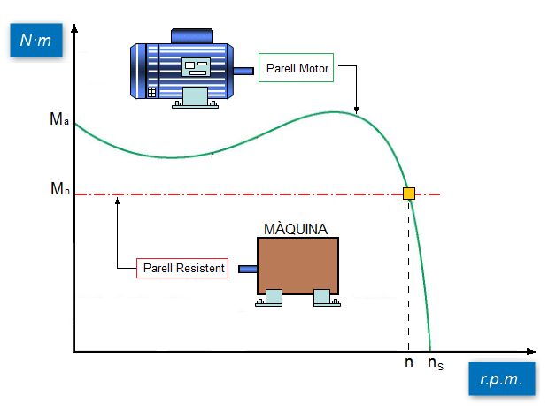

Càrrega amb Parell Constant

Les càrregues de parell constant requereixen la mateixa quantitat de parell a baixes velocitats que a altes velocitats. El parell es manté constant en tot el rang de velocitats i la Potència (P) augmenta i disminueix en proporció directa a la velocitat. Per exemple, si la velocitat del motor augmenta en un 50%, la potència també haurà d'augmentar en un 50% si volem que el parell es mantingue constant.
Les càrregues de parell constant inclouen la majoria de les bombes i compressors alternatius i de desplaçament positiu, les cintes transportadores i els aparells elevadors com ascensors i grues.